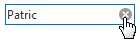
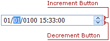
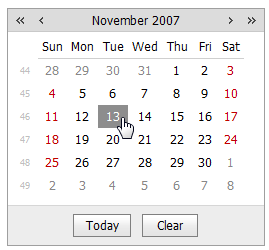
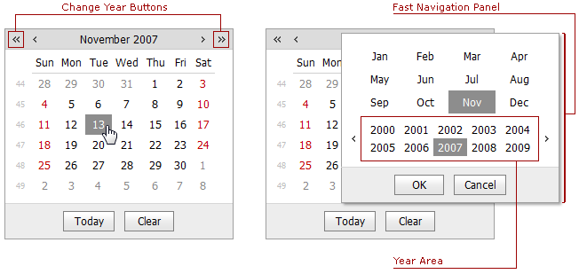
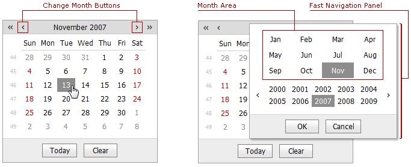
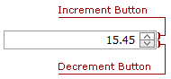
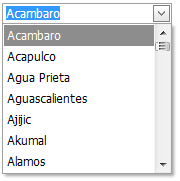
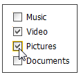

Editing Values, Selecting Text and Using the Clipboard
Select and Deselect Editor's Contents
To select all the text within an editor, invoke the control's Editor Context Menu and choose Select All. To select a part of the editor's content, click on the position where the selection should start, drag the pointer to the end position, and then release the mouse button.
Additionally, the following keyboard shortcuts allow you to manage selections.
| Shortcut | Description |
|---|---|
| CTRL+A | Select all the text within an editor. |
| SHIFT+ARROW | Extends or shrinks the selection by one character. |
| CTRL+SHIFT+ARROW | Extends or shrinks the selection by one word. |
Clipboard Operations
Clipboard operations are represented by copying, cutting and pasting operations.
To copy selected text into the clipboard, do the following.
- Press CTRL+C or CTRL+INSERT.
- Open the Editor Context Menu and select Copy.
To paste text from the clipboard, do the following.
- Press CTRL+V or SHIFT+INSERT.
- Open the Editor Context Menu and select Paste.
To cut text from an editor into the clipboard, do the following.
- Press CTRL+X or SHIFT+DELETE.
- Open the Editor Context Menu and select Cut.
Delete Selected Text
To delete the selected text within an editor, do one of the following:
- Press DELETE or BACKSPACE.
- Open the Editor Context Menu and select Delete.
Click the clear button, which is displayed when an editor is focused and is not empty.

Undo and Redo
To undo the last text editing operation, do one of the following:
- Press CTRL+Z.
- Open the Editor Context Menu and select Undo.
To redo a canceled operation, press CTRL+Y.
Change Date Values within a Edit Box
To change the date value within the edit box, click the required part of the date value (month, day, year, etc.) and press the Increment or Decrement button. Alternatively, you can use the Up and Down Arrows.

Change Date Values within a Calendar
Click a date to set a new edit value.

To change the year value use the
 and calendar buttons. Also, you can click the current date within the control header and specify the year within the opened fast navigation panel.
and calendar buttons. Also, you can click the current date within the control header and specify the year within the opened fast navigation panel.
To change the month value, use the and calendar buttons. Also, you can click the current date within the control header and specify the month within the opened fast navigation panel.

The arrow keys can also be used for navigating within the calendar.
Change Numeric Values

To increment a value, press the UP ARROW or increment button. To decrement the value, press the DOWN ARROW or decrement button. Or, use the mouse wheel.
Change Values of Editors That Display Items in the Dropdown

To select the previous or the next value, press the UP or DOWN ARROW. Or, use the mouse wheel.
Items Selection in Check Box List

To select required items in the check box list, just click the items or the respective check boxes.